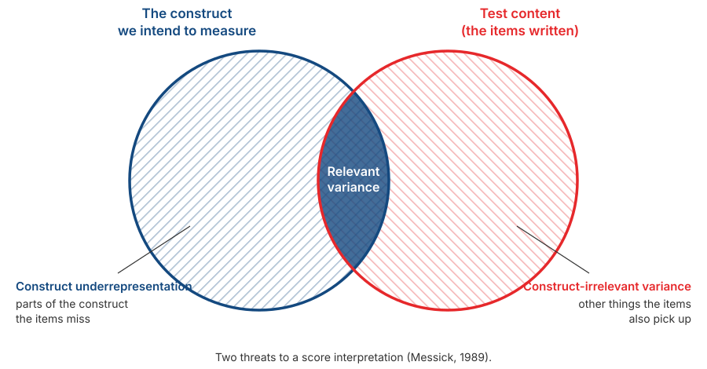

Validity: Core Concepts and Implementation
Psychological Scale Construction
2026-08-25
Outline
- Why validity is a property of score interpretations, not of a scale
- How three “types of validity” became one concept with five sources of evidence
- Those five sources, one at a time
- Construct underrepresentation and construct-irrelevant variance
- Why pushing \(\alpha\) ever higher can actually reduce validity
From reliability to validity
The question still open
Session 6 gave us ways to compute consistency: \(\alpha\), \(\omega\), split-half.
All of those coefficients answer the same question: are the scores stable?
None of them answers: do the scores reflect what we intended?
Note
Recall the bathroom scale from Session 3. A scale that is always 2 kg out can be internally consistent. Internal consistency can never detect a systematic measurement error.
An illustration you have probably seen before

Why this illustration is factually wrong
The labels “Reliable” and “Valid” are attached to the target board itself — as if these were properties of the instrument. That is the same mistake as writing “this scale is valid.”
The “Valid, Not reliable” panel is also questionable, specifically for criterion validity: reliability sets an upper bound on the validity coefficient (recall the attenuation formula from Session 3, \(r_{XY} \leq \sqrt{\rho_{XX'} \times \rho_{YY'}}\)). Inconsistent scores automatically cap how strongly they can correlate with any criterion.
A more accurate reading
Horizontal axis: consistency of the scores (reliability). Vertical axis: how well the scores track what you intend to measure (validity). Both are properties of scores for a given use, not something an instrument simply “has” or “lacks.”
Validity is a property of score interpretations
The formal definition
Validity refers to the degree to which evidence and theory support the interpretations of test scores for proposed uses of tests.
— AERA, APA, & NCME (2014)
Note the subject: what is validated is an interpretation of scores, for a stated use.
Not the test. Not the scale. Not the items.
Three consequences
Tied to a purpose. A scale whose interpretation is supported for research is not thereby supported for job selection or clinical diagnosis.
Tied to a population. Evidence gathered on students does not automatically transfer to factory workers or schoolchildren.
Never finished. Evidence can accumulate, and it can also weaken when contradictory findings appear.
How to write it
Instead of “our scale is valid”, write:
“There is evidence supporting the interpretation of scores on scale X as an indicator of construct Y, in population Z, for purpose W.”
It is a longer sentence, but it is the one you can defend.
Sentences worth fixing
| Often written | Better |
|---|---|
| “This scale is valid and reliable.” | “Scores on this scale had \(\alpha = \ldots\), and content and internal-structure evidence support interpreting them as …” |
| “The scale’s validity was 0.62.” | “Scores correlated 0.62 with …, which supports interpreting them as …” |
| “Validity testing was carried out.” | “The validity evidence we collected consisted of … and …” |
Note
The left column is not merely untidy. All three treat validity as something an instrument possesses and as something finished once and for all.
From three types to one concept
The old division
Until roughly the 1970s, textbooks divided validity into three:
- Content validity — do the items represent the intended material?
- Criterion validity — do scores correlate with a relevant external measure, now (concurrent) or later (predictive)?
- Construct validity — do scores behave as theory says they should?
The problem with this division
It leads people to think there are three separate jobs to be ticked off one by one. In practice, many reports state that “content validity was established” and stop there.
How the view changed
Cronbach & Meehl (1955) introduced construct validity and the nomological network: a construct’s meaning lies in its network of relations with other constructs.
Loevinger (1957) went further: construct validity is not one type among several — it is the whole of validity.
Messick (1989, 1995) unified it: validity is a single integrated judgement of how far evidence and theory support the inferences and actions taken from scores.
The Standards (2014) turned this into something practical: not “types of validity” but sources of evidence, all supporting one interpretation.
What changed in practice
The old way
“We conducted content validity testing, then construct validity testing.”
The current way
“Here is the evidence we collected to support this interpretation, and here is what we do not have.”
One argument built from several sources.
Tip
This change requires more honesty: you have to name the evidence you lack, not only the evidence you have.
The five sources of evidence
The list
| Source of evidence | The question it asks | Can you do it? |
|---|---|---|
| Test content | Do the items represent the construct? | Yes (S11) |
| Response processes | Do respondents think the way we assume? | Yes (before S12) |
| Internal structure | Does the item structure match the theory? | Yes (S13) |
| Relations to other variables | Do the scores behave as theory predicts? | Partly (S12) |
| Consequences of use | What follows from using these scores? | Discussed in the manual (S14) |
Evidence 1: test content
The question
Do the items you wrote represent the whole construct you intend?
To answer that, you first need a clear definition of the domain — what is in and what is out.
That is the work of Session 9. Without a clear construct boundary, there is no way to judge whether the items represent it.
Two threats

Underrepresentation vs. irrelevant
Construct underrepresentation — parts of the construct that your items fail to capture. An anxiety scale containing only physical symptoms, with no cognitive ones, has this problem.
Construct-irrelevant variance — your items also measure something else. A maths problem written in long, convoluted sentences also measures reading ability.
How to collect the evidence
Ask a panel of experts to rate each item: how relevant is this item to the construct as defined?
Compute their level of agreement. Items rated irrelevant, or on which the raters disagree, are revised.
The standard procedure is the Content Validity Index (Lynn, 1986; Polit & Beck, 2006).
You have already done a simple version of this
In Session 5 you acted as Thurstone judges: rating where each statement sits, then discarding the ones you could not agree on.
CVI uses the same logic with a different criterion.
Evidence 2: response processes
The question
When respondents answer your items, are they actually going through the thought process you assume?
Recall Session 2: Nisbett & Wilson (1977) showed that people often have no access to their own mental processes.
An item can look perfect on paper and still be read by respondents in an entirely different way.
Cognitive interviewing
Ask a few prospective respondents to complete your items while saying out loud what they are thinking (think aloud).
Afterwards, ask: “What do you think this question is asking?” and “How did you arrive at that answer?”
Note any confusing words, items read two ways, and anchors that are unclear.
The cheapest step, and the one most often skipped
Just 3 to 5 people before the pilot, and it almost always uncovers problems the authors could not see themselves.
Do this before Session 12. It costs almost nothing and usually saves a great deal of analysis work later.
Evidence 3: internal structure
The question
Does the pattern of relations among items match the structure your theory describes?
If you claim your construct has three facets, does the factor analysis also show three item clusters?
If you claim it is unidimensional, do the data support that?
What this includes
Dimensionality — how many factors emerge, and whether items group as planned.
Equivalence across groups — whether that structure is the same for men and women, or across age groups. This is assumption five from Session 2.
Internal consistency — \(\alpha\) and \(\omega\) are also evidence about internal structure, but weak evidence.
Why \(\alpha\) is only weak evidence
Session 6 showed it with numbers: \(\alpha = .62\) on a scale that was plainly two-dimensional. A single coefficient cannot describe a structure.
Evidence 4: relations to other variables
Two directions, checked together
Convergent
Your scores correlate with other measures of the same or a similar construct.
Example: a new social anxiety scale correlates with an established one.
Discriminant
Your scores do not correlate too highly with constructs that should be distinct.
Example: a social anxiety scale does not correlate very highly with a depression scale.
Warning
Convergent evidence alone is not enough. If your scale correlates .85 with everything, what you are measuring may be something very general rather than the construct you claim.
The multitrait-multimethod matrix
Campbell & Fiske (1959) proposed a way to examine both at once: measure several constructs using several methods, then compare the pattern of correlations.
The idea: correlations between the same construct measured by different methods should exceed correlations between different constructs measured by the same method.
If they do not, much of what you are measuring is the method, not the construct.
Note
This is why any two self-report scales tend to correlate: part of it comes from sharing a method, not from sharing a construct.
Criterion-related evidence
Concurrent — scores correlate with a criterion measured at the same time.
Predictive — scores predict a criterion in the future.
Known-groups — scores distinguish groups that theory says should differ. A social anxiety scale should give higher scores to people currently in treatment for that difficulty.
What is realistic for your project
Known-groups and concurrent evidence are still within reach. Include one short established scale in your pilot questionnaire in Session 12 and report the correlation.
Even a single correlation is far better than no evidence at all.
The same name does not mean the same content
Recall Fried’s (2017) finding from Session 1: seven depression scales contained 52 different symptoms.
So a low correlation with a “similar” scale does not necessarily mean your scale is poor. The two may genuinely measure different things despite sharing a name.
What you need to check is the content of the comparison scale, not just its title.
Evidence 5: consequences of use
The idea
Messick argued that the consequences of using scores also belong to the validity argument.
A selection test that systematically disadvantages a particular group is a problem — even if its correlation with the criterion looks good.
The question is whether that consequence reflects a real difference, or construct-irrelevant variance.
This part is still debated
Some scholars hold that social consequences are a policy question rather than a validity question. You do not have to take a side, but you should know the debate exists.
For the manual you will write
In Session 14 you will write a scale manual. That manual determines what decisions may be made from the scores.
State explicitly what the scores may be used for, and what they may not be used for.
A sentence such as “this scale is not intended for clinical diagnosis or personnel selection” is part of the validity work, not a formality.
A dissenting view
Borsboom’s objection
Borsboom, Mellenbergh, & van Heerden (2004) consider Messick’s definition too broad, mixing too many things together.
On their account the validity question should be far simpler: does the attribute exist, and does variation in that attribute cause variation in the scores?
If yes, the test is valid. If no, it is not. Usefulness and consequences, they argue, are separate questions.
Why we cover this
As with Michell’s objection in Session 1: you do not have to agree. What you should know is that even a well-established concept is still argued over by people who work on it seriously.
Reliability and validity
The upper bound
From Session 3:
\[r_{XY} \leq \sqrt{\rho_{XX'} \times \rho_{YY'}}\]
Low reliability — in your scale or in the criterion — limits the correlation you can obtain.
So reliability is necessary.
But people often draw the wrong conclusion from this: that higher reliability always means better validity.
The attenuation paradox
Loevinger (1954) showed that beyond a certain point, raising internal consistency actually lowers validity.
The reason: the easiest way to raise \(\alpha\) is to write items that resemble one another, and that is exactly the strategy that weakens validity.
Items that resemble one another cover one small corner of the construct very tightly and leave the rest untouched. That is construct underrepresentation.
An example
These ten items would produce a very high \(\alpha\): “I feel sad”, “I often feel down”, “My mood is frequently low”, and so on.
That scale measures sad mood very consistently — and does not measure sleep disturbance, loss of interest, guilt, or appetite change at all.
The conclusion
A high \(\alpha\)
is not always good news.
Check \(\alpha\) alongside content coverage. A very high value on a short scale of near-identical items should be examined first, not taken as a good sign.
An evidence plan for your project
What is realistic this semester
| Source of evidence | When | How |
|---|---|---|
| Content | S11 | CVI from an expert panel |
| Response processes | Before S12 | Cognitive interviews, 3–5 people |
| Internal structure | S13 | Factor analysis + reliability per dimension |
| Relations to other variables | S12 | Include one short established scale |
| Consequences | S14 | Limits of use, stated in the manual |
Group discussion
Part 1: assessing claims
Discuss for 15 minutes. For each claim: what evidence does it actually provide, and what is missing?
A. “Our scale is valid because every item has an item-total correlation above .30.”
B. “Our scale’s validity is established by its correlation of .88 with a well-known anxiety scale.”
C. “This scale has been validated on students, so it can be used for employee assessment.”
Part 2: planning your group’s evidence
Name two aspects of your construct most at risk of being missed by the items you have in mind (construct underrepresentation).
Name one other thing your items might also be picking up (construct-irrelevant variance).
Which established scale will you include in the pilot as a comparison? Is it for convergent or discriminant evidence?
What must your group’s scores not be used for? Write one sentence.
Tip
Your answers to 1 and 2 will be used directly when you build the blueprint in Session 10.
Closing the first half
Seven sessions, one thread
- Psychological measurement is indirect, and its definition is still contested.
- There are six assumptions we rely on, most of them unnoticed.
- CTT organises those assumptions into \(X = T + E\).
- Response formats determine which assumptions you take on.
- Other formats give up different assumptions, each at a cost.
- Reliability can be computed, and \(\alpha\) has clear limits.
- Validity is an argument built from several sources of evidence.
Worth remembering
All of it comes down to one sentence: know which assumptions you are relying on, and what follows if they are wrong.
The midterm examination
It is multiple choice, covering Sessions 1 to 7.
What is tested is not memorised names and dates but the ability to recognise a situation: which coefficient fits, which assumption is being violated, what a given statement actually demonstrates.
The most likely material: levels of measurement, the six assumptions, \(X = T + E\), choosing a response format, interpreting \(\alpha\) and \(\omega\), and the five sources of validity evidence.
Tip
The most useful way to revise: take any scale you can find and answer the seven questions above for it yourself.
After the midterm
Session 9 — the project begins: defining the construct and the estimand, from literature review to operational definition.
Session 10 — building the blueprint and writing items.
Note
From Session 9 onward, everything from the first half turns into decisions you have to make yourselves.
Any questions❓

Notes
- These slides were built with and Quarto, using the UNAIR Theme template.
- Reach me at amelia.zein@psikologi.unair.ac.id
References
AERA, APA, & NCME. (2014). Standards for educational and psychological testing. American Educational Research Association.
Borsboom, D., Mellenbergh, G. J., & van Heerden, J. (2004). The concept of validity. Psychological Review, 111(4), 1061–1071.
Campbell, D. T., & Fiske, D. W. (1959). Convergent and discriminant validation by the multitrait-multimethod matrix. Psychological Bulletin, 56(2), 81–105.
Cronbach, L. J., & Meehl, P. E. (1955). Construct validity in psychological tests. Psychological Bulletin, 52(4), 281–302.
DeVellis, R. F., & Thorpe, C. T. (2022). Scale development: Theory and applications (5th ed.). SAGE.
Fried, E. I. (2017). The 52 symptoms of major depression. Journal of Affective Disorders, 208, 191–197.
Loevinger, J. (1954). The attenuation paradox in test theory. Psychological Bulletin, 51(5), 493–504.
Loevinger, J. (1957). Objective tests as instruments of psychological theory. Psychological Reports, 3, 635–694.
Lynn, M. R. (1986). Determination and quantification of content validity. Nursing Research, 35(6), 382–385.
Messick, S. (1989). Validity. In R. L. Linn (Ed.), Educational measurement (3rd ed., pp. 13–103). Macmillan.
Messick, S. (1995). Validity of psychological assessment. American Psychologist, 50(9), 741–749.
Polit, D. F., & Beck, C. T. (2006). The content validity index: Are you sure you know what’s being reported? Research in Nursing & Health, 29(5), 489–497.
Willis, G. B. (2005). Cognitive interviewing: A tool for improving questionnaire design. SAGE.